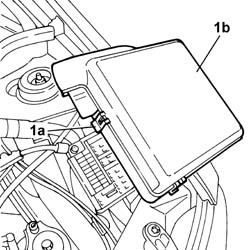
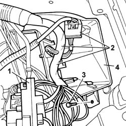
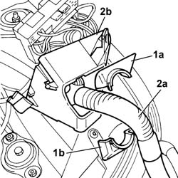

5505A28 container of supplementary junction unit in engine bay - r r
- Path
- Procedures > 55 ELECTRICAL EQUIPMENT > 5505 ELECTRICAL CIRCUIT FOR INSTRUMENTS/INDICATORS > 5505A multi-function components > 5505A28 container of supplementary junction unit in engine bay - r r
- Kind
- repair procedure (removal / refitting; the operation number is the code)
- Applies to
- all engines; all production periods
- Interactive page
- https://sloeber94.github.io/elrnDB-fPnd/en/#/2752927
Applies to: all engines; all production periods
 Removing
Removing
 Refitting
Refitting1. Disengage the fixing lugs (1a) and remove the cover (1b).

Applies to: all engines; all production periods
1. Release the additional junction unit from the attachments and move it aside.
2. Undo the electrical connections from the attachments and move the wiring aside.
3. Undo the retaining bolt.
4. Partially remove the additional junction unit container.

Applies to: all engines; all production periods
1. Remove the cable passes (1a) and (1b).
2. Release from the wiring (2a) and remove the additional junction unit container (2b).

Applies to: all engines; all production periods
Refitting
RemovingPosition the wiring inside the additional junction unit container and secure it with the cable passes.
Position the additional junction unit container in its seating and tighten the fixing bolt.
Restore the positions of the electrical connections and wiring.
Position the additional junction unit in its seating and check that it is secure.
Fit the cover and check that it is secure.